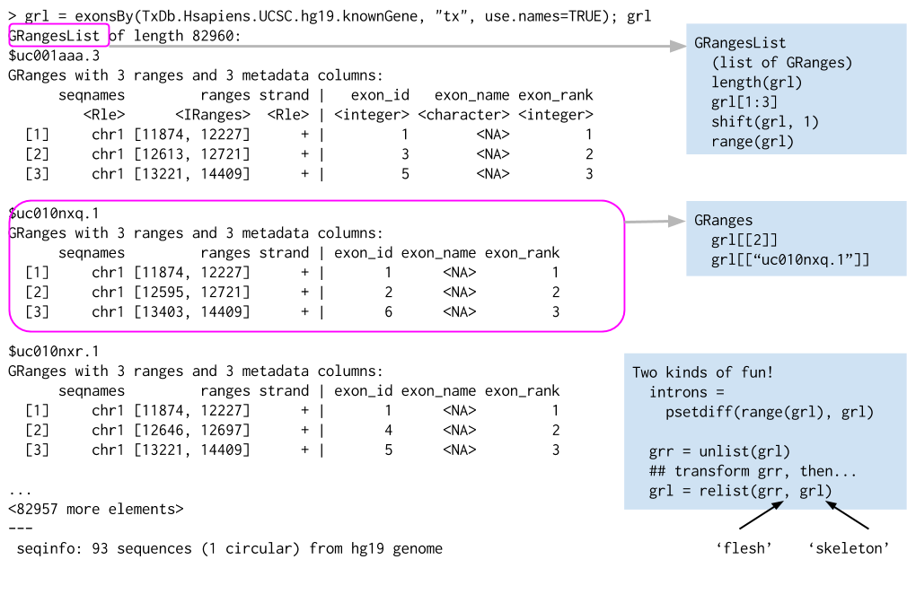
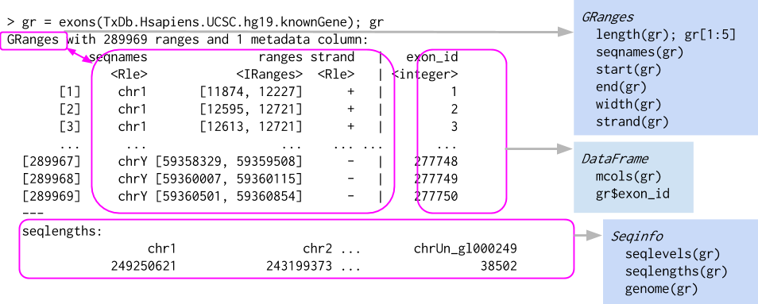
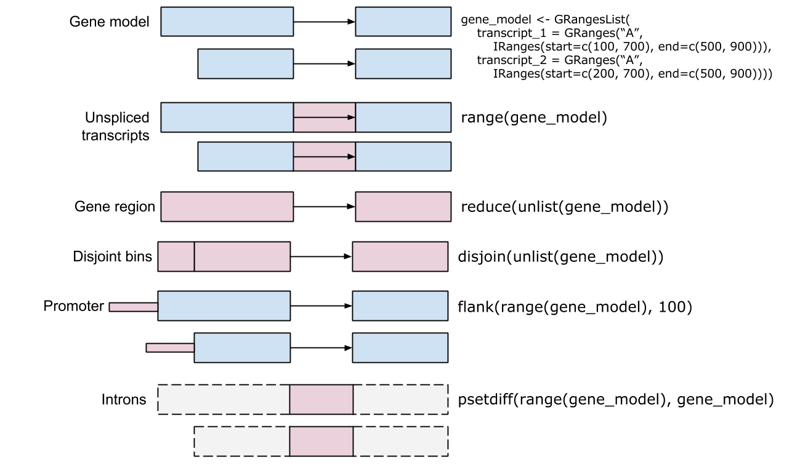

18 Genomic ranges and features
18.1 Introduction
Genomic ranges are a way of describing regions on the genome (or any other linear object, such as a transcript, or even a protein). This functionality is typically found in the GenomicRanges package (Lawrence et al. 2013).
The Bioconductor GenomicRanges package is a comprehensive toolkit designed to handle and manipulate genomic intervals and variables systematized on these intervals. Developed by Bioconductor, this package simplifies the complexity of managing genomic data, facilitating the efficient exploration, manipulation, and visualization of such data. GenomicRanges aids in dealing with the challenges of genomic data, including its massive size, intricate relationships, and high dimensionality.
The GenomicRanges package in Bioconductor covers a wide range of use cases related to the management and analysis of genomic data. Here are some key examples:
- Genomic Feature Manipulation
- The GenomicRanges and GRanges classes can be used to represent and manipulate various genomic features such as genes, transcripts, exons, or single-nucleotide polymorphisms (SNPs). Users can query, subset, resize, shift, or sort these features based on their genomic coordinates.
- Genomic Interval Operations
- The GenomicRanges package provides functions for performing operations on genomic intervals, such as finding overlaps, nearest neighbors, or disjoint intervals. These operations are fundamental to many types of genomic data analyses, such as identifying genes that overlap with ChIP-seq peaks, or finding variants that are in close proximity to each other.
- Alignments and Coverage
- The GAlignments and GAlignmentPairs classes can be used to represent alignments of sequencing reads to a reference genome, such as those produced by a read aligner. Users can then compute coverage of these alignments over genomic ranges of interest, which is a common task in RNA-seq or ChIP-seq analysis.
- Annotation and Metadata Handling
- The metadata column of a GRanges object can be used to store various types of annotation data associated with genomic ranges, such as gene names, gene biotypes, or experimental scores. This makes it easy to perform analyses that integrate genomic coordinates with other types of biological information.
- Genome Arithmetic
- The GenomicRanges package supports a version of “genome arithmetic”, which includes set operations (union, intersection, set difference) as well as other operations (like coverage, complement, or reduction) that are adapted to the specificities of genomic data.
- Efficient Data Handling
- The CompressedGRangesList class provides a space-efficient way to represent a large list of GRanges objects, which is particularly useful when working with large genomic datasets, such as whole-genome sequencing data.
The GenomicRanges package in Bioconductor uses the S4 class system (see Table 18.1), which is a part of the methods package in R. The S4 system is a more rigorous and formal approach to object-oriented programming in R, providing enhanced capabilities for object design and function dispatch.
| Class Name | Description | Potential Use |
|---|---|---|
| GRanges | Represents a collection of genomic ranges and associated variables. | ChipSeq peaks, CpG islands, etc. |
| GRangesList | Represents a list of GenomicRanges objects. | transcript models (exons, introns) |
| RangesList | Represents a list of Ranges objects. | |
| IRanges | Represents a collection of integer ranges. | used mainly to build GRanges, etc. |
| GPos | Represents genomic positions. | SNPs or other single nicleotide locations |
| GAlignments | Represents alignments against a reference genome. | Sequence read locations from a BAM file |
| GAlignmentPairs | Represents pairs of alignments, typically representing a single fragment of DNA. | Paired-end sequence alignments |
In the context of the GenomicRanges package, the S4 class system allows for the creation of complex, structured data objects that can effectively encapsulate genomic intervals and associated data. This system enables the package to handle the complexity and intricacy of genomic data.
For example, the GenomicRanges class in the package is an S4 class that combines several basic data types into a composite object. It includes slots for sequence names (seqnames), ranges (start and end positions), strand information, and metadata. Each slot in the S4 class corresponds to a specific component of the genomic data, and methods (see Table 18.2 and Table 18.3) can be defined to interact with these slots in a structured and predictable way.
| Method | Description |
|---|---|
| length | Returns the number of ranges in the GRanges object. |
| seqnames | Retrieves the sequence names of the ranges. |
| ranges | Retrieves the start and end positions of the ranges. |
| strand | Retrieves the strand information of the ranges. |
| elementMetadata | Retrieves the metadata associated with the ranges. |
| seqlevels | Returns the levels of the factor that the seqnames slot is derived from. |
| seqinfo | Retrieves the Seqinfo (sequence information) object associated with the GRanges object. |
| start, end, width | Retrieve or set the start or end positions, or the width of the ranges. |
| resize | Resizes the ranges. |
| subset, [, [[, $ | Subset or extract elements from the GRanges object. |
| sort | Sorts the GRanges object. |
| shift | Shifts the ranges by a certain number of base pairs. |
The S4 class system also supports inheritance, which allows for the creation of specialized subclasses that share certain characteristics with a parent class but have additional features or behaviors.
The S4 system’s formalism and rigor make it well-suited to the complexities of bioinformatics and genomic data analysis. It allows for the creation of robust, reliable code that can handle complex data structures and operations, making it a key part of the GenomicRanges package and other Bioconductor packages.
| Method | Description |
|---|---|
| findOverlaps | Finds overlaps between different sets of ranges. |
| countOverlaps | Counts overlaps between different sets of ranges. |
| subsetByOverlaps | Subsets the ranges based on overlaps. |
| distanceToNearest | Computes the distance to the nearest range in another set of ranges. |

list of GRanges objects. While the analogy is not perfect, a GRangesList behaves a bit like a list. Each element in the GRangesList is a Granges object. A common use case for a GRangesList is to store a list of transcripts, each of which have exons as the regions in the GRanges.18.2 The GRanges class
To get going, we can construct a GRanges object by hand as an example.
The GRanges class represents a collection of genomic ranges that each have a single start and end location on the genome. It can be used to store the location of genomic features such as contiguous binding sites, transcripts, and exons. These objects can be created by using the GRanges constructor function. The following code just creates a GRanges object from scratch.
gr <- GRanges(
seqnames = Rle(c("chr1", "chr2", "chr1", "chr3"), c(1, 3, 2, 4)),
ranges = IRanges(101:110, end = 111:120, names = head(letters, 10)),
strand = Rle(strand(c("-", "+", "*", "+", "-")), c(1, 2, 2, 3, 2)),
score = 1:10,
GC = seq(1, 0, length=10))
grGRanges object with 10 ranges and 2 metadata columns:
seqnames ranges strand | score GC
<Rle> <IRanges> <Rle> | <integer> <numeric>
a chr1 101-111 - | 1 1.000000
b chr2 102-112 + | 2 0.888889
c chr2 103-113 + | 3 0.777778
d chr2 104-114 * | 4 0.666667
e chr1 105-115 * | 5 0.555556
f chr1 106-116 + | 6 0.444444
g chr3 107-117 + | 7 0.333333
h chr3 108-118 + | 8 0.222222
i chr3 109-119 - | 9 0.111111
j chr3 110-120 - | 10 0.000000
-------
seqinfo: 3 sequences from an unspecified genome; no seqlengthsThis creates a GRanges object with 10 genomic ranges. The output of the GRanges show() method separates the information into a left and right hand region that are separated by | symbols (see Figure 18.2). The genomic coordinates (seqnames, ranges, and strand) are located on the left-hand side and the metadata columns are located on the right. For this example, the metadata is comprised of score and GC information, but almost anything can be stored in the metadata portion of a GRanges object.

GRanges object, which behaves a bit like a vector of ranges, although the analogy is not perfect. A GRanges object is composed of the “Ranges” part the lefthand box, the “metadata” columns (the righthand box), and a “seqinfo” part that describes the names and lengths of associated sequences. Only the “Ranges” part is required. The figure also shows a few of the “accessors” and approaches to subsetting a GRanges object.The components of the genomic coordinates within a GRanges object can be extracted using the seqnames, ranges, and strand accessor functions.
seqnames(gr)factor-Rle of length 10 with 4 runs
Lengths: 1 3 2 4
Values : chr1 chr2 chr1 chr3
Levels(3): chr1 chr2 chr3ranges(gr)IRanges object with 10 ranges and 0 metadata columns:
start end width
<integer> <integer> <integer>
a 101 111 11
b 102 112 11
c 103 113 11
d 104 114 11
e 105 115 11
f 106 116 11
g 107 117 11
h 108 118 11
i 109 119 11
j 110 120 11strand(gr)factor-Rle of length 10 with 5 runs
Lengths: 1 2 2 3 2
Values : - + * + -
Levels(3): + - *Note that the GRanges object has information to the “left” side of the | that has special accessors. The information to the right side of the |, when it is present, is the metadata and is accessed using mcols(), for “metadata columns”.
[1] "DFrame"
attr(,"package")
[1] "S4Vectors"mcols(gr)DataFrame with 10 rows and 2 columns
score GC
<integer> <numeric>
a 1 1.000000
b 2 0.888889
c 3 0.777778
d 4 0.666667
e 5 0.555556
f 6 0.444444
g 7 0.333333
h 8 0.222222
i 9 0.111111
j 10 0.000000Since the class of mcols(gr) is DFrame, we can use our DataFrame approaches to work with the data.
mcols(gr)$score [1] 1 2 3 4 5 6 7 8 9 10We can even assign a new column.
GRanges object with 10 ranges and 3 metadata columns:
seqnames ranges strand | score GC AT
<Rle> <IRanges> <Rle> | <integer> <numeric> <numeric>
a chr1 101-111 - | 1 1.000000 0.000000
b chr2 102-112 + | 2 0.888889 0.111111
c chr2 103-113 + | 3 0.777778 0.222222
d chr2 104-114 * | 4 0.666667 0.333333
e chr1 105-115 * | 5 0.555556 0.444444
f chr1 106-116 + | 6 0.444444 0.555556
g chr3 107-117 + | 7 0.333333 0.666667
h chr3 108-118 + | 8 0.222222 0.777778
i chr3 109-119 - | 9 0.111111 0.888889
j chr3 110-120 - | 10 0.000000 1.000000
-------
seqinfo: 3 sequences from an unspecified genome; no seqlengthsAnother common way to create a GRanges object is to start with a data.frame, perhaps created by hand like below or read in using read.csv or read.table. We can convert from a data.frame, when columns are named appropriately, to a GRanges object.
df_regions = data.frame(chromosome = rep("chr1",10),
start=seq(1000,10000,1000),
end=seq(1100, 10100, 1000))
as(df_regions,'GRanges') # note that names have to match with GRanges slotsGRanges object with 10 ranges and 0 metadata columns:
seqnames ranges strand
<Rle> <IRanges> <Rle>
[1] chr1 1000-1100 *
[2] chr1 2000-2100 *
[3] chr1 3000-3100 *
[4] chr1 4000-4100 *
[5] chr1 5000-5100 *
[6] chr1 6000-6100 *
[7] chr1 7000-7100 *
[8] chr1 8000-8100 *
[9] chr1 9000-9100 *
[10] chr1 10000-10100 *
-------
seqinfo: 1 sequence from an unspecified genome; no seqlengthsGRanges object with 10 ranges and 0 metadata columns:
seqnames ranges strand
<Rle> <IRanges> <Rle>
[1] chr1 1000-1100 *
[2] chr1 2000-2100 *
[3] chr1 3000-3100 *
[4] chr1 4000-4100 *
[5] chr1 5000-5100 *
[6] chr1 6000-6100 *
[7] chr1 7000-7100 *
[8] chr1 8000-8100 *
[9] chr1 9000-9100 *
[10] chr1 10000-10100 *
-------
seqinfo: 1 sequence from an unspecified genome; no seqlengthsGRanges have one-dimensional-like behavior. For instance, we can check the length and even give GRanges names.
18.2.1 Subsetting GRanges objects
While GRanges objects look a bit like a data.frame, they can be thought of as vectors with associated ranges. Subsetting, then, works very similarly to vectors. To subset a GRanges object to include only second and third regions:
gr[2:3]GRanges object with 2 ranges and 3 metadata columns:
seqnames ranges strand | score GC AT
<Rle> <IRanges> <Rle> | <integer> <numeric> <numeric>
b chr2 102-112 + | 2 0.888889 0.111111
c chr2 103-113 + | 3 0.777778 0.222222
-------
seqinfo: 3 sequences from an unspecified genome; no seqlengthsThat said, if the GRanges object has metadata columns, we can also treat it like a two-dimensional object kind of like a data.frame. Note that the information to the left of the | is not like a data.frame, so we cannot do something like gr$seqnames. Here is an example of subsetting with the subset of one metadata column.
gr[2:3, "GC"]GRanges object with 2 ranges and 1 metadata column:
seqnames ranges strand | GC
<Rle> <IRanges> <Rle> | <numeric>
b chr2 102-112 + | 0.888889
c chr2 103-113 + | 0.777778
-------
seqinfo: 3 sequences from an unspecified genome; no seqlengthsThe usual head() and tail() also work just fine.
head(gr,n=2)GRanges object with 2 ranges and 3 metadata columns:
seqnames ranges strand | score GC AT
<Rle> <IRanges> <Rle> | <integer> <numeric> <numeric>
a chr1 101-111 - | 1 1.000000 0.000000
b chr2 102-112 + | 2 0.888889 0.111111
-------
seqinfo: 3 sequences from an unspecified genome; no seqlengthstail(gr,n=2)GRanges object with 2 ranges and 3 metadata columns:
seqnames ranges strand | score GC AT
<Rle> <IRanges> <Rle> | <integer> <numeric> <numeric>
i chr3 109-119 - | 9 0.111111 0.888889
j chr3 110-120 - | 10 0.000000 1.000000
-------
seqinfo: 3 sequences from an unspecified genome; no seqlengths18.2.2 Interval operations on one GRanges object
18.2.2.1 Intra-range methods
The methods described in this section work one-region-at-a-time and are, therefore, called “intra-region” methods. Methods that work across all regions are described below in the Inter-range methods section.
The GRanges class has accessors for the “ranges” part of the data. For example:
## Make a smaller GRanges subset
g <- gr[1:3]
start(g) # to get start locations[1] 101 102 103end(g) # to get end locations[1] 111 112 113width(g) # to get the "widths" of each range[1] 11 11 11range(g) # to get the "range" for each sequence (min(start) through max(end))GRanges object with 2 ranges and 0 metadata columns:
seqnames ranges strand
<Rle> <IRanges> <Rle>
[1] chr1 101-111 -
[2] chr2 102-113 +
-------
seqinfo: 3 sequences from an unspecified genome; no seqlengthsThe GRanges class also has many methods for manipulating the ranges. The methods can be classified as intra-range methods, inter-range methods, and between-range methods. Intra-range methods operate on each element of a GRanges object independent of the other ranges in the object. For example, the flank method can be used to recover regions flanking the set of ranges represented by the GRanges object. So to get a GRanges object containing the ranges that include the 10 bases upstream of the ranges:
flank(g, 10)GRanges object with 3 ranges and 3 metadata columns:
seqnames ranges strand | score GC AT
<Rle> <IRanges> <Rle> | <integer> <numeric> <numeric>
a chr1 112-121 - | 1 1.000000 0.000000
b chr2 92-101 + | 2 0.888889 0.111111
c chr2 93-102 + | 3 0.777778 0.222222
-------
seqinfo: 3 sequences from an unspecified genome; no seqlengthsNote how flank pays attention to “strand”. To get the flanking regions downstream of the ranges, we can do:
flank(g, 10, start=FALSE)GRanges object with 3 ranges and 3 metadata columns:
seqnames ranges strand | score GC AT
<Rle> <IRanges> <Rle> | <integer> <numeric> <numeric>
a chr1 91-100 - | 1 1.000000 0.000000
b chr2 113-122 + | 2 0.888889 0.111111
c chr2 114-123 + | 3 0.777778 0.222222
-------
seqinfo: 3 sequences from an unspecified genome; no seqlengthsOther examples of intra-range methods include resize and shift. The shift method will move the ranges by a specific number of base pairs, and the resize method will extend the ranges by a specified width.
shift(g, 5)GRanges object with 3 ranges and 3 metadata columns:
seqnames ranges strand | score GC AT
<Rle> <IRanges> <Rle> | <integer> <numeric> <numeric>
a chr1 106-116 - | 1 1.000000 0.000000
b chr2 107-117 + | 2 0.888889 0.111111
c chr2 108-118 + | 3 0.777778 0.222222
-------
seqinfo: 3 sequences from an unspecified genome; no seqlengthsresize(g, 30)GRanges object with 3 ranges and 3 metadata columns:
seqnames ranges strand | score GC AT
<Rle> <IRanges> <Rle> | <integer> <numeric> <numeric>
a chr1 82-111 - | 1 1.000000 0.000000
b chr2 102-131 + | 2 0.888889 0.111111
c chr2 103-132 + | 3 0.777778 0.222222
-------
seqinfo: 3 sequences from an unspecified genome; no seqlengthsThe GenomicRanges help page ?"intra-range-methods" summarizes these methods.
18.2.2.2 Inter-range methods
Inter-range methods involve comparisons between ranges in a single GRanges object. For instance, the reduce method will align the ranges and merge overlapping ranges to produce a simplified set.
reduce(g)GRanges object with 2 ranges and 0 metadata columns:
seqnames ranges strand
<Rle> <IRanges> <Rle>
[1] chr1 101-111 -
[2] chr2 102-113 +
-------
seqinfo: 3 sequences from an unspecified genome; no seqlengthsThe reduce method could, for example, be used to collapse individual overlapping coding exons into a single set of coding regions.
Sometimes one is interested in the gaps or the qualities of the gaps between the ranges represented by your GRanges object. The gaps method provides this information:
gaps(g)GRanges object with 2 ranges and 0 metadata columns:
seqnames ranges strand
<Rle> <IRanges> <Rle>
[1] chr1 1-100 -
[2] chr2 1-101 +
-------
seqinfo: 3 sequences from an unspecified genome; no seqlengthsIn this case, we have not specified the lengths of the chromosomes, so Bioconductor is making the assumption (incorrectly) that the chromosomes end at the largest location on each chromosome. We can correct this by setting the seqlengths correctly, but we can ignore that detail for now.
The disjoin method represents a GRanges object as a collection of non-overlapping ranges:
disjoin(g)GRanges object with 4 ranges and 0 metadata columns:
seqnames ranges strand
<Rle> <IRanges> <Rle>
[1] chr1 101-111 -
[2] chr2 102 +
[3] chr2 103-112 +
[4] chr2 113 +
-------
seqinfo: 3 sequences from an unspecified genome; no seqlengthsThe coverage method quantifies the degree of overlap for all the ranges in a GRanges object.
coverage(g)RleList of length 3
$chr1
integer-Rle of length 111 with 2 runs
Lengths: 100 11
Values : 0 1
$chr2
integer-Rle of length 113 with 4 runs
Lengths: 101 1 10 1
Values : 0 1 2 1
$chr3
integer-Rle of length 0 with 0 runs
Lengths:
Values : The coverage is summarized as a list of coverages, one for each chromosome. The Rle class is used to store the values. Sometimes, one must convert these values to numeric using as.numeric. In many cases, this will happen automatically, though.
See the GenomicRanges help page ?"intra-range-methods" for more details.
18.2.3 Set operations for GRanges objects
Between-range methods calculate relationships between different GRanges objects. Of central importance are findOverlaps and related operations; these are discussed below. Additional operations treat GRanges as mathematical sets of coordinates; union(g, g2) is the union of the coordinates in g and g2. Here are examples for calculating the union, the intersect and the asymmetric difference (using setdiff).
GRanges object with 2 ranges and 0 metadata columns:
seqnames ranges strand
<Rle> <IRanges> <Rle>
[1] chr1 101-111 -
[2] chr2 102-113 +
-------
seqinfo: 3 sequences from an unspecified genome; no seqlengthsintersect(g, g2)GRanges object with 2 ranges and 0 metadata columns:
seqnames ranges strand
<Rle> <IRanges> <Rle>
[1] chr1 101-111 -
[2] chr2 102-112 +
-------
seqinfo: 3 sequences from an unspecified genome; no seqlengthssetdiff(g, g2)GRanges object with 1 range and 0 metadata columns:
seqnames ranges strand
<Rle> <IRanges> <Rle>
[1] chr2 113 +
-------
seqinfo: 3 sequences from an unspecified genome; no seqlengthsThere is extensive additional help available or by looking at the vignettes in at the GenomicRanges pages.
?GRangesThere are also many possible methods that work with GRanges objects. To see a complete list (long), try:
methods(class="GRanges")18.3 GRangesList
Some important genomic features, such as spliced transcripts that are are comprised of exons, are inherently compound structures. Such a feature makes much more sense when expressed as a compound object such as a GRangesList. If we thing of each transcript as a set of exons, each transcript would be summarized as a GRanges object. However, if we have multiple transcripts, we want to somehow keep them separate, with each transcript having its own exons. The GRangesList is then a list of GRanges objects that. Continuing with the transcripts thought, a GRangesList can contain all the transcripts and their exons; each transcript is an element in the list.
Whenever genomic features consist of multiple ranges that are grouped by a parent feature, they can be represented as a GRangesList object. Consider the simple example of the two transcript GRangesList below created using the GRangesList constructor.
The gr1 and gr2 are each GRanges objects. We can combine them into a “named” GRangesList like so:
grl <- GRangesList("txA" = gr1, "txB" = gr2)
grlGRangesList object of length 2:
$txA
GRanges object with 1 range and 2 metadata columns:
seqnames ranges strand | score GC
<Rle> <IRanges> <Rle> | <integer> <numeric>
[1] chr1 103-106 + | 5 0.45
-------
seqinfo: 1 sequence from an unspecified genome; no seqlengths
$txB
GRanges object with 2 ranges and 2 metadata columns:
seqnames ranges strand | score GC
<Rle> <IRanges> <Rle> | <integer> <numeric>
[1] chr1 107-109 + | 3 0.3
[2] chr1 113-115 - | 4 0.5
-------
seqinfo: 1 sequence from an unspecified genome; no seqlengthsThe show method for a GRangesList object displays it as a named list of GRanges objects, where the names of this list are considered to be the names of the grouping feature. In the example above, the groups of individual exon ranges are represented as separate GRanges objects which are further organized into a list structure where each element name is a transcript name. Many other combinations of grouped and labeled GRanges objects are possible of course, but this example is a common arrangement.
In some cases, GRangesLists behave quite similarly to GRanges objects.
18.3.1 Basic GRangesList accessors
Just as with GRanges object, the components of the genomic coordinates within a GRangesList object can be extracted using simple accessor methods. Not surprisingly, the GRangesList objects have many of the same accessors as GRanges objects. The difference is that many of these methods return a list since the input is now essentially a list of GRanges objects. Here are a few examples:
seqnames(grl)RleList of length 2
$txA
factor-Rle of length 1 with 1 run
Lengths: 1
Values : chr1
Levels(1): chr1
$txB
factor-Rle of length 2 with 1 run
Lengths: 2
Values : chr1
Levels(1): chr1ranges(grl)IRangesList object of length 2:
$txA
IRanges object with 1 range and 0 metadata columns:
start end width
<integer> <integer> <integer>
[1] 103 106 4
$txB
IRanges object with 2 ranges and 0 metadata columns:
start end width
<integer> <integer> <integer>
[1] 107 109 3
[2] 113 115 3strand(grl)RleList of length 2
$txA
factor-Rle of length 1 with 1 run
Lengths: 1
Values : +
Levels(3): + - *
$txB
factor-Rle of length 2 with 2 runs
Lengths: 1 1
Values : + -
Levels(3): + - *The length and names methods will return the length or names of the list and the seqlengths method will return the set of sequence lengths.
18.4 Relationships between region sets
One of the more powerful approaches to genomic data integration is to ask about the relationship between sets of genomic ranges. The key features of this process are to look at overlaps and distances to the nearest feature. These functionalities, combined with the operations like flank and resize, for instance, allow pretty useful analyses with relatively little code. In general, these operations are very fast, even on thousands to millions of regions.
18.4.1 Overlaps
The findOverlaps method in the GenomicRanges package is a very useful function that allows users to identify overlaps between two sets of genomic ranges.
Here’s how it works:
- Inputs
- The function requires two GRanges objects, referred to as query and subject.
- Processing
- The function then compares every range in the query object with every range in the subject object, looking for overlaps. An overlap is defined as any instance where the range in the query object intersects with a range in the subject object.
- Output
-
The function returns a Hits (see
?Hits) object, which is a compact representation of the matrix of overlaps. Each entry in the Hits object corresponds to a pair of overlapping ranges, with the query index and the subject index.
Here is an example of how you might use the findOverlaps function:
# Create two GRanges objects
gr1 <- gr[1:4]
gr2 <- gr[3:8]
gr1GRanges object with 4 ranges and 3 metadata columns:
seqnames ranges strand | score GC AT
<Rle> <IRanges> <Rle> | <integer> <numeric> <numeric>
a chr1 101-111 - | 1 1.000000 0.000000
b chr2 102-112 + | 2 0.888889 0.111111
c chr2 103-113 + | 3 0.777778 0.222222
d chr2 104-114 * | 4 0.666667 0.333333
-------
seqinfo: 3 sequences from an unspecified genome; no seqlengthsgr2GRanges object with 6 ranges and 3 metadata columns:
seqnames ranges strand | score GC AT
<Rle> <IRanges> <Rle> | <integer> <numeric> <numeric>
c chr2 103-113 + | 3 0.777778 0.222222
d chr2 104-114 * | 4 0.666667 0.333333
e chr1 105-115 * | 5 0.555556 0.444444
f chr1 106-116 + | 6 0.444444 0.555556
g chr3 107-117 + | 7 0.333333 0.666667
h chr3 108-118 + | 8 0.222222 0.777778
-------
seqinfo: 3 sequences from an unspecified genome; no seqlengths# Find overlaps
overlaps <- findOverlaps(query = gr1, subject = gr2)
overlapsHits object with 7 hits and 0 metadata columns:
queryHits subjectHits
<integer> <integer>
[1] 1 3
[2] 2 1
[3] 2 2
[4] 3 1
[5] 3 2
[6] 4 1
[7] 4 2
-------
queryLength: 4 / subjectLength: 6In the resulting overlaps object, each row corresponds to an overlapping pair of ranges, with the first column giving the index of the range in gr1 and the second column giving the index of the overlapping range in gr2.
If you are interested in only the queryHits or the subjectHits, there are accessors for those (ie., queryHits(overlaps)). To get the actual ranges that overlap, you can use the subjectHits or queryHits as an index into the original GRanges object.
Spend some time looking at these results. Note how the strand comes into play when determining overlaps.
gr1[queryHits(overlaps)]GRanges object with 7 ranges and 3 metadata columns:
seqnames ranges strand | score GC AT
<Rle> <IRanges> <Rle> | <integer> <numeric> <numeric>
a chr1 101-111 - | 1 1.000000 0.000000
b chr2 102-112 + | 2 0.888889 0.111111
b chr2 102-112 + | 2 0.888889 0.111111
c chr2 103-113 + | 3 0.777778 0.222222
c chr2 103-113 + | 3 0.777778 0.222222
d chr2 104-114 * | 4 0.666667 0.333333
d chr2 104-114 * | 4 0.666667 0.333333
-------
seqinfo: 3 sequences from an unspecified genome; no seqlengthsgr2[subjectHits(overlaps)]GRanges object with 7 ranges and 3 metadata columns:
seqnames ranges strand | score GC AT
<Rle> <IRanges> <Rle> | <integer> <numeric> <numeric>
e chr1 105-115 * | 5 0.555556 0.444444
c chr2 103-113 + | 3 0.777778 0.222222
d chr2 104-114 * | 4 0.666667 0.333333
c chr2 103-113 + | 3 0.777778 0.222222
d chr2 104-114 * | 4 0.666667 0.333333
c chr2 103-113 + | 3 0.777778 0.222222
d chr2 104-114 * | 4 0.666667 0.333333
-------
seqinfo: 3 sequences from an unspecified genome; no seqlengthsAs you might expect, the countOverlaps method counts the regions in the second GRanges that overlap with those that overlap with each element of the first.
countOverlaps(gr1, gr2)a b c d
1 2 2 2 The subsetByOverlaps method simply subsets the query GRanges object to include only those that overlap the subject.
subsetByOverlaps(gr1, gr2)GRanges object with 4 ranges and 3 metadata columns:
seqnames ranges strand | score GC AT
<Rle> <IRanges> <Rle> | <integer> <numeric> <numeric>
a chr1 101-111 - | 1 1.000000 0.000000
b chr2 102-112 + | 2 0.888889 0.111111
c chr2 103-113 + | 3 0.777778 0.222222
d chr2 104-114 * | 4 0.666667 0.333333
-------
seqinfo: 3 sequences from an unspecified genome; no seqlengthsIn some cases, you may be interested in only one hit when doing overlaps. Note the select parameter. See the help for findOverlaps
findOverlaps(gr1, gr2, select="first")[1] 3 1 1 1findOverlaps(gr1, gr2, select="first")[1] 3 1 1 1The %over% logical operator allows us to do similar things to findOverlaps and subsetByOverlaps.
gr2 %over% gr1[1] TRUE TRUE TRUE FALSE FALSE FALSEgr1[gr1 %over% gr2]GRanges object with 4 ranges and 3 metadata columns:
seqnames ranges strand | score GC AT
<Rle> <IRanges> <Rle> | <integer> <numeric> <numeric>
a chr1 101-111 - | 1 1.000000 0.000000
b chr2 102-112 + | 2 0.888889 0.111111
c chr2 103-113 + | 3 0.777778 0.222222
d chr2 104-114 * | 4 0.666667 0.333333
-------
seqinfo: 3 sequences from an unspecified genome; no seqlengths18.4.2 Nearest feature
There are a number of useful methods that find the nearest feature (region) in a second set for each element in the first set.
We can review our two GRanges toy objects:
gGRanges object with 3 ranges and 3 metadata columns:
seqnames ranges strand | score GC AT
<Rle> <IRanges> <Rle> | <integer> <numeric> <numeric>
a chr1 101-111 - | 1 1.000000 0.000000
b chr2 102-112 + | 2 0.888889 0.111111
c chr2 103-113 + | 3 0.777778 0.222222
-------
seqinfo: 3 sequences from an unspecified genome; no seqlengthsgrGRanges object with 10 ranges and 3 metadata columns:
seqnames ranges strand | score GC AT
<Rle> <IRanges> <Rle> | <integer> <numeric> <numeric>
a chr1 101-111 - | 1 1.000000 0.000000
b chr2 102-112 + | 2 0.888889 0.111111
c chr2 103-113 + | 3 0.777778 0.222222
d chr2 104-114 * | 4 0.666667 0.333333
e chr1 105-115 * | 5 0.555556 0.444444
f chr1 106-116 + | 6 0.444444 0.555556
g chr3 107-117 + | 7 0.333333 0.666667
h chr3 108-118 + | 8 0.222222 0.777778
i chr3 109-119 - | 9 0.111111 0.888889
j chr3 110-120 - | 10 0.000000 1.000000
-------
seqinfo: 3 sequences from an unspecified genome; no seqlengthsnearest: Performs conventional nearest neighbor finding. Returns an integer vector containing the index of the nearest neighbor range in subject for each range in x. If there is no nearest neighbor NA is returned. For details of the algorithm see the man page in the IRanges package (?nearest).
precede: For each range in x, precede returns the index of the range in subject that is directly preceded by the range in x. Overlapping ranges are excluded. NA is returned when there are no qualifying ranges in subject.
follow: The opposite of precede, follow returns the index of the range in subject that is directly followed by the range in x. Overlapping ranges are excluded. NA is returned when there are no qualifying ranges in subject.
Orientation and strand for precede and follow: Orientation is 5’ to 3’, consistent with the direction of translation. Because positional numbering along a chromosome is from left to right and transcription takes place from 5’ to 3’, precede and follow can appear to have ‘opposite’ behavior on the + and - strand. Using positions 5 and 6 as an example, 5 precedes 6 on the + strand but follows 6 on the - strand.
The table below outlines the orientation when ranges on different strands are compared. In general, a feature on * is considered to belong to both strands. The single exception is when both x and subject are * in which case both are treated as +.
x | subject | orientation
-----+-----------+----------------
a) + | + | --->
b) + | - | NA
c) + | * | --->
d) - | + | NA
e) - | - | <---
f) - | * | <---
g) * | + | --->
h) * | - | <---
i) * | * | ---> (the only situation where * arbitrarily means +)res = nearest(g, gr)
res[1] 5 4 4While nearest and friends give the index of the nearest feature, the distance to the nearest is sometimes also useful to have. The distanceToNearest method calculates the nearest feature as well as reporting the distance.
res = distanceToNearest(g, gr)
resHits object with 3 hits and 1 metadata column:
queryHits subjectHits | distance
<integer> <integer> | <integer>
[1] 1 5 | 0
[2] 2 4 | 0
[3] 3 4 | 0
-------
queryLength: 3 / subjectLength: 1018.5 Plyranges
Plyranges is a Bioconductor package that provides a grammar of genomic data manipulation. It’s a toolset for performing operations on genomic intervals (or ranges) and associated annotations in the R programming language. The package extends the functionality of the GenomicRanges package, another Bioconductor package designed to manage and manipulate genomic interval data. The plyranges package provides a grammar for manipulating genomic ranges (Lee, Cook, and Lawrence 2019). It is similar to the dplyr package for data frames.
The Plyranges package is designed to address several challenges that arise in the analysis of genomic data:
- Manipulating Genomic Intervals
- Genomic intervals (e.g., gene locations, variant locations, etc.) are a fundamental data type in bioinformatics. Plyranges provides a simple and consistent set of operations for manipulating these intervals, such as finding overlaps, nearest neighbors, or shifting and resizing intervals.
- Working with Genomic Annotations
- Genomic intervals often have associated annotations (e.g., gene names, variant alleles, etc.). Plyranges provides tools for manipulating these annotations along with their associated intervals.
- Integration with the Tidyverse
- The Tidyverse is a collection of R packages designed for data science. Plyranges uses a similar syntax and integrates well with these packages, making it easier for users familiar with the Tidyverse to work with genomic data.
- Performance
- Working with genomic data often involves large datasets. Plyranges is built on the Bioconductor ranges infrastructure and is designed to be efficient and performant, even when working with large genomic datasets.
library(plyranges)| Category | Verb | Description |
|---|---|---|
| Aggregate | summarize() | Aggregate over column(s) |
| disjoin_ranges() | Aggregate column(s) over the union of end coordinates | |
| reduce_ranges() | Aggregate column(s) by merging overlapping and neighboring ranges | |
| Modify (Unary) | mutate() | Modifies any column |
| select() | Select columns | |
| arrange() | Sort by columns | |
| stretch() | Extend range by fixed amount | |
| shift_(direction) | Shift coordinates | |
| flank_(direction) | Generate flanking regions | |
| %intersection% | Row-wise intersection | |
| %union% | Row-wise union | |
| compute_coverage | Coverage over all ranges | |
| Modify (Binary) | %setdiff% | Row-wise set difference |
| between() | Row-wise gap range | |
| span() | Row-wise spanning range | |
| Merge | join_overlap_*() | Merge by overlapping ranges |
| join_nearest | Merge by nearest neighbor ranges | |
| join_follow | Merge by following ranges | |
| join_precedes | Merge by preceding ranges | |
| union_ranges | Range-wise union | |
| intersect_ranges | Range-wise intersect | |
| setdiff_ranges | Range-wise set difference | |
| complement_ranges | Range-wise set complement | |
| Operate | anchor_direction() | Fix coordinates at direction |
| group_by() | Partition by column(s) | |
| group_by_overlaps() | Partition by overlaps | |
| Restrict | filter() | Subset rows |
| filter_by_overlaps() | Subset by overlap | |
| filter_by_non_overlaps() | Subset by no overlap |
plyranges package.18.6 Gene models
The TxDb package provides a convenient interface to gene models from a variety of sources. The TxDb.Hsapiens.UCSC.hg38.knownGene package provides access to the UCSC knownGene gene model for the hg19 build of the human genome.

library(TxDb.Hsapiens.UCSC.hg38.knownGene)
txdb <- TxDb.Hsapiens.UCSC.hg38.knownGeneThe transcripts function returns a GRanges object with the transcripts for all genes in the database.
tx <- transcripts(txdb)18.7 Session Info
R version 4.3.0 (2023-04-21)
Platform: aarch64-apple-darwin20 (64-bit)
Running under: macOS Ventura 13.1
Matrix products: default
BLAS: /Library/Frameworks/R.framework/Versions/4.3-arm64/Resources/lib/libRblas.0.dylib
LAPACK: /Library/Frameworks/R.framework/Versions/4.3-arm64/Resources/lib/libRlapack.dylib; LAPACK version 3.11.0
locale:
[1] en_US.UTF-8/en_US.UTF-8/en_US.UTF-8/C/en_US.UTF-8/en_US.UTF-8
time zone: America/New_York
tzcode source: internal
attached base packages:
[1] stats4 stats graphics grDevices utils datasets methods
[8] base
other attached packages:
[1] TxDb.Hsapiens.UCSC.hg38.knownGene_3.17.0
[2] GenomicFeatures_1.52.1
[3] AnnotationDbi_1.62.2
[4] Biobase_2.60.0
[5] plyranges_1.19.0
[6] GenomicRanges_1.52.0
[7] GenomeInfoDb_1.36.1
[8] IRanges_2.34.1
[9] S4Vectors_0.38.1
[10] BiocGenerics_0.46.0
[11] knitr_1.43
loaded via a namespace (and not attached):
[1] KEGGREST_1.40.0 SummarizedExperiment_1.30.2
[3] rjson_0.2.21 xfun_0.39
[5] htmlwidgets_1.6.2 lattice_0.21-8
[7] vctrs_0.6.3 tools_4.3.0
[9] bitops_1.0-7 generics_0.1.3
[11] curl_5.0.1 parallel_4.3.0
[13] tibble_3.2.1 fansi_1.0.4
[15] RSQLite_2.3.1 blob_1.2.4
[17] pkgconfig_2.0.3 Matrix_1.5-4.1
[19] dbplyr_2.3.2 lifecycle_1.0.3
[21] GenomeInfoDbData_1.2.10 stringr_1.5.0
[23] compiler_4.3.0 progress_1.2.2
[25] Rsamtools_2.16.0 Biostrings_2.68.1
[27] codetools_0.2-19 htmltools_0.5.5
[29] RCurl_1.98-1.12 yaml_2.3.7
[31] pillar_1.9.0 crayon_1.5.2
[33] BiocParallel_1.34.2 DelayedArray_0.26.6
[35] cachem_1.0.8 tidyselect_1.2.0
[37] digest_0.6.31 stringi_1.7.12
[39] dplyr_1.1.2 restfulr_0.0.15
[41] biomaRt_2.56.1 fastmap_1.1.1
[43] grid_4.3.0 cli_3.6.1
[45] magrittr_2.0.3 S4Arrays_1.0.4
[47] XML_3.99-0.14 utf8_1.2.3
[49] rappdirs_0.3.3 filelock_1.0.2
[51] prettyunits_1.1.1 bit64_4.0.5
[53] rmarkdown_2.23 XVector_0.40.0
[55] httr_1.4.6 matrixStats_1.0.0
[57] bit_4.0.5 hms_1.1.3
[59] png_0.1-8 memoise_2.0.1
[61] evaluate_0.21 BiocIO_1.10.0
[63] BiocFileCache_2.8.0 rtracklayer_1.60.0
[65] rlang_1.1.1 glue_1.6.2
[67] DBI_1.1.3 xml2_1.3.5
[69] rstudioapi_0.14 jsonlite_1.8.7
[71] R6_2.5.1 MatrixGenerics_1.12.2
[73] GenomicAlignments_1.36.0 zlibbioc_1.46.0